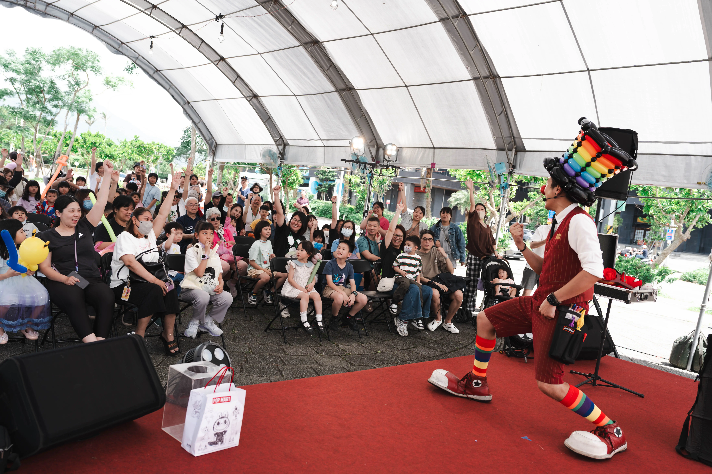
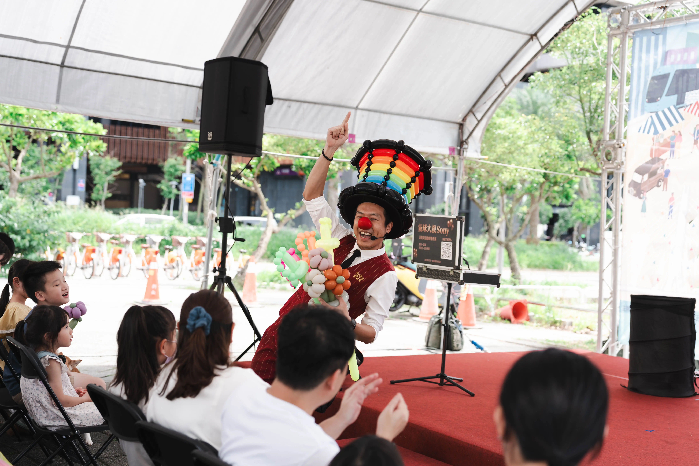
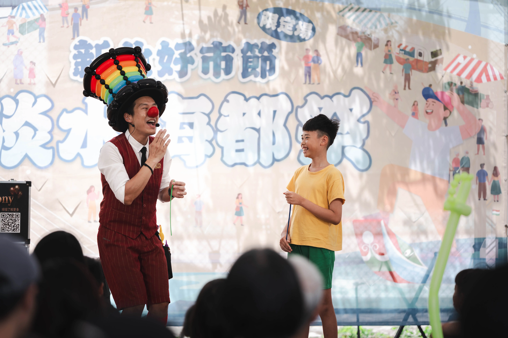
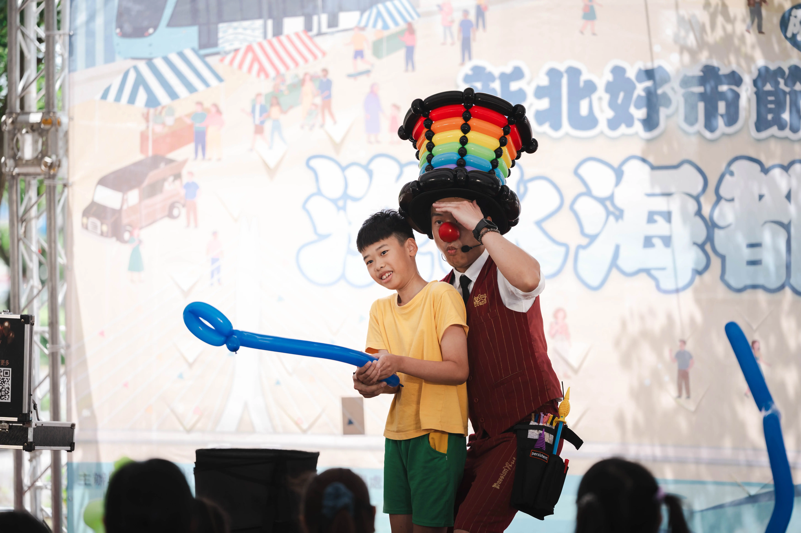
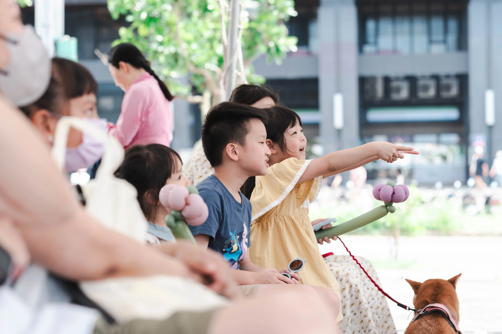

【淡水親子活動紀錄】孩子搶著上台！淡水海都祭互動魔術與造型氣球表演
全場孩子搶著舉手參與，看氣球大叔 Sony如何用互動魔術與造型氣球打造最熱鬧的親子舞台。
| 📊 新北好市節・淡水海都祭演出摘要 | |
|---|---|
| 活動日期 | 2026 年 5 月 24 日 |
| 活動地點 | 新北市淡水區義山路二段301號（淡水海都廣場） |
| 核心表演 | 戶外大型舞台親子魔術秀、頂級創意造型氣球互動 |
| 現場亮點 | 全場觀眾瘋狂舉手參與、舞台零距離小幫手挑戰、爆滿親子家庭共襄盛舉 |
| 演出者 | 氣球大叔 Sony |
2026 年 5 月於新北市淡水區舉辦的「新北好市節・淡水海都祭」大型戶外盛會，特別選址在淡水海都廣場（義山路二段301號）盛大展開，吸引眾多親子家庭到場參與。活動現場結合市集、美食與舞台演出，從下午開始便陸續湧入人潮，不少來自淡水、八里、三芝以及北海岸地區的親子家庭，也特地來到活動現場共襄盛舉。在緊湊的商場親子活動與市集攤位之中，舞台區的「親子互動魔術秀」與「創意造型氣球」成了最聚攏人潮的目光焦點，透過沉浸式的舞台遊戲，讓現場的大朋友小朋友都一起投入在滿滿的歡樂之中。

彩色氣球慢慢成形，台下驚呼聲此起彼落
演出才剛開始沒多久，舞台前方的小朋友已經忍不住坐直身體、興奮地往前靠近。當第一個大型造型氣球完成時，舞台前方立刻傳出孩子們的驚呼聲。有些孩子甚至直接站了起來，想看清楚大叔手中下一個氣球會變成什麼模樣，許多家長也紛紛拿起手機，記錄下孩子看見氣球變身時，那副驚奇又專注的可愛模樣。

打破舞台界線，讓每位孩子都成為現場的主角
親子活動最重要的，就是讓孩子擁有參與感。在演出中特別設計了互動環節，邀請勇敢的小朋友直接上台參與。當孩子站在聚光燈下成為舞台上的主角時，台下所有觀眾都給予了最熱烈的掌聲與加油聲。這種零距離的互動，不僅創造了專屬的珍貴回憶，也讓整個現場氣氛顯得格外溫馨。

搞笑橋段笑聲不斷，全場沉浸在歡樂劇情中
戶外活動最考驗演出者對現場節奏的把控與娛樂性。當搞笑望遠鏡橋段登場、畫面突然出現意想不到的發展時，台下立刻爆出了連連的笑聲與歡呼。不少孩子甚至興奮地搶著舉手回答問題，深怕錯過了下一個可以互動的機會。精準的節奏帶動，讓所有人完全沉浸在歡樂劇情氛圍裡。

當全場孩子都想被選上台的那一刻
一場成功的親子活動，並不是孩子安靜坐著看完表演，而是每個人都想參與其中。
當問答互動開始時，現場幾乎所有孩子都把手舉了起來，希望能獲得上台機會。看著一雙雙高舉的小手與充滿期待的眼神，也讓整個淡水海都祭的舞台區瞬間成為現場最熱鬧的角落之一。台下孩子們那雙專注發亮的眼神、家長們放鬆且滿足的笑臉，不僅是活動圓滿成功的最佳證明，更是停留時間與人潮聚集的完美體現。
用幸福的側影，留下最真實活動印記
有時候，一場活動成功與否，不需要透過掌聲來證明。
當孩子完全投入在表演裡時，那份專注其實藏不住。活動進行過程中，不少孩子目不轉睛地盯著舞台，深怕錯過任何一個有趣的橋段。看著他們因為好奇而睜大眼睛、因為驚喜而露出笑容，也讓現場的家長忍不住拿起手機記錄下這些珍貴畫面。
對主辦單位而言，這樣的投入度往往比單純的人數更有價值。因為真正成功的親子活動，不只是把人留下來，而是讓每個家庭都留下美好的回憶。

💡 關於親子活動表演的常見問題（FAQ）
- Q: 親子活動適合安排互動魔術表演嗎？
- A: 非常適合。專業的親子互動魔術秀與傳統魔術不同，它不著重於神秘感，而是透過幽默的對白、誇張的肢體動作，以及「邀請小朋友上台當小幫手」的方式引導孩子參與。這不僅能大幅提升現場的歡樂氣氛，更能讓台下的孩子完全投入，非常適合各式社區派對與節慶活動。
- Q: 企業家庭日適合氣球與魔術結合的演出嗎？
- A: 這是最推薦的黃金組合。企業家庭日通常會聚集跨年齡層的員工家庭，魔術表演具備極高的舞台張力與控場效果，能瞬間吸引全場目光；而色彩繽紛的造型氣球則能為孩子帶來實體的快樂與驚喜。兩者結合能確保活動從開場到結尾都毫無冷場，是凝聚企業向心力與歡樂氣氛的最佳選擇。
- Q: 商場親子活動如何有效提高親子家庭的停留時間（Dwell Time）？
- A: 關鍵在於創造「強互動的沈浸式體驗」。當表演者具備優秀的控場能力、能引導全場孩子搶著舉手互動時（如大叔在淡水海都祭的現場），家長就會心甘情願地停下腳步、拿起手機記錄畫面。這不僅能大幅拉長親子家庭在商場親子活動區的停留時間，更能有效帶動周邊市集攤位或商場專櫃的衍生消費。
一場成功的親子活動，
不是孩子安靜地看完表演。
而是每個孩子都想舉起手，
成為舞台上的主角。
📅 馬上預約「氣球大叔 Sony」為您的活動注入滿滿歡樂！
如果您也正在規劃企業家庭日、百貨商場活動、社區嘉年華、校園活動或生日派對，希望孩子願意主動參與、家長願意停下腳步、現場能夠自然聚集人潮，那麼互動魔術與造型氣球的組合，會是一個非常值得考慮的選擇。歡迎隨時聯絡大叔，讓我們一起為活動打造出全場舉手、笑聲爆棚的成功體驗！
- 核心服務傳送門：歡迎參考我們的 精采魔術互動秀服務 頁面。
- 造型設計傳送門：需要更繽紛的視覺？快去看看 頂級造型氣球與會場佈置服務。
- 檔期預留卡位：週末與熱門百貨節慶檔期極易客滿，歡迎提前與我們專人討論。
📅 本文紀錄於 2026-05-24，由氣球大叔 Sony 團隊親自撰寫分享新北淡水海都祭精彩演出案例。